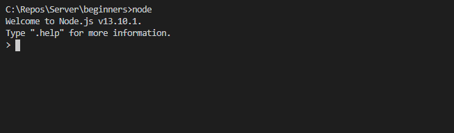
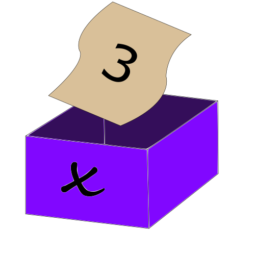

第2章 - プログラミングを体感してみよう！¶
これまでプログラミングとは何か?という話を見てきたと思うのですが、出来る事をたくさん聞いただけだったと思うので、プログラミングそのものをイメージしずらかったと思います。
ことわざにもあるように「百聞は一見に如かず」なので、例をみてプログラミングの一片を、クイズ形式で学んでみましょう。
注意¶
この章はJavaScriptという"言語"(パソコンが理解できるイタリア語みたいなもの)を使って学習を進めています。
これを動かすのはちょっと大変ですが、プログラムを実際に動かさなくても勉強出来るように教材を作っているので安心してくださいね。

先ずは準備(読み飛ばし推奨)¶

先ずはNode.jsというソフトを開きます(実際に開かなくて大丈夫です)
そうすると以下のような文字が出てきます。
Welcome to Node.js v13.10.1.
Type ".help" for more information.
>
これがプログラムを実際に動かしてくれるソフトの見た目です。
上の2行(Welcome to Node.js うんたらかんたらの部分)は、ソフトを開いたときに必ずでる説明文で無視して問題ありません。
取り除いて考えてみましょう。
>
大なり記号が残りました。
これがプログラムを動かしてくれる重要な部分です。
実は、この大なり記号の後にプログラムを書くと、そのプログラムの通りにパソコンが動いてくれます。
足し算をプログラムしてみよう¶
Node.jsに
> 1 + 1;
と打ってEnterキーを押すと
> 1 + 1;
2
と表示されます。これは
あなた 「1+1を計算して」
パソコン 「ええで、答えは2やで」
と同じ意です。
なんだ、こんな簡単なことか、と思ったかも知れませんが、パソコンに命令しているので、これでも立派なプログラミングです!
「;」これはなんだろう?と思った人もいると思いますが、これは「セミコロン」と呼ばれる記号で、大まかにいえば、計算して!とパソコンに指示を出すものです。
> 2 + 3 + 5;
では、上のように打ち込んでEnterキーを押すとどうなるでしょうか?考えて見てください。
答え:
> 2 + 3 + 5;
10
これは、言い換えれば、
あなた 「2+3+5を計算して」
パソコン 「ええで、答えは10やで」
という状況です。意外とプログラミングって簡単ですね。
引き算、掛け算、割り算をプログラムしてみよう¶
以下、ざっと見ていきましょう
> 5 - 2;
3
> 4 * 3;
12
> 3 / 2;
1.5
「*」これは掛け算を示す記号です。パソコンでは掛けるの記号を一発で打てないので代わりに「*」を使います。
「/」これは割り算を示す記号です。これまた、パソコンでは割るの記号を一発で打てないので代わりに「/」を使います。
> (3 + 4) * 2;
14
こんな感じにかっこを使って計算することも出来ます。
これくらい、暗算できるよ、って思うと思いますが、ここからパソコンの力を見ていきましょう。
> 5.45 * 5.45 * 3.14;
半径5.45の円の面積です。これ、暗算きついですよね。
> 5.45 * 5.45 * 3.14;
93.26585
ただ、パソコンはこれを1秒もかからずに(もっと言えば0.1秒もかからずに)計算できます。
これが我々がパソコンを使うわけです。では、問題を出します。答えはこのページの一番下にありますよ。
Q. 上辺が3.72で下底が2.15で高さ4.21の台形の面積を計算するコードは?
変数というとても重要な概念¶
Javascriptには変数というものがあります。
> x = 3;
これはxという変数(箱)に3という値を入れるという操作です。また、この操作を 代入 といいます。
方程式とかをやったことのある人ならば理解しやすいと思います。

> x = 3;
> x * x;
9
これはxに3を入れて、xの二乗(x * x)を計算する操作です。答えは9となっています。
また、変数は中の値を変えることができます。例を挙げます。
> x = 3;
> x;
3
> x = 5;
> x;
5
このように、代入を再度行うと値が変わります。この性質はとても重要なので覚えておいてください。
この様なことをすると、どうなるか予想してみてください。
> a = 2;
> b = 3;
> a = 5;
> b = 4;
> a * b;
見た目がややこしいですね。ただ、これも上から考えていくと、最後の時点で、a = 5, b = 4となっているはずなので、a * bは...
> a = 2;
> b = 3;
> a = 5;
> b = 4;
> a * b;
20
20になります。これが理解できれば、あなたも一流の変数マスターです。
この変数は色々なところで使われる超重要な概念ですが、これの魅力がわかりやすい例を示します。
先ほど半径5.45の円の面積を求めましたが、これをもっと読みやすく計算できます。
> r = 5.45;
> pi = 3.14;
> r * r * pi;
93.26585
これならば、円周率を求める計算が、半径 * 半径 * 円周率であることが分かりやすいです。
分かりやすいプログラムを書くと思考が整理されます。また、逆説的ではありますが、思考が整理されている人ほど読みやすいプログラムを書くことが多いです。
ここで、問題です。答えはこのページの一番下にありますよ。
Q. a = 5.34, b = 4.23, c = 2.67 とおいて、それから、この三つの値の平均を求めてください。
条件分岐があると、楽しい¶
これまた、プログラムでは欠かせない概念です。
> a = 3
> if (a == 3) a;
3
> if (a > 1) a;
3
これまでのものと違い、ぱっと見で理解できた人はいないんじゃないでしょうか。
「if」これはかっこの中の式が正しい時に、コードを動かしなさい、という意味です。ifは日本語で"もし"という意味なのでそれをイメージするといいかもしれません。
「==」これは右と左は等しいか?という式を示します。A == Bで、AとBは正しいか、と問いかけることができます。
「>」これは左の方が右より大きいか?という式を示します。A > Bで、AよりBは大きいか、と問いかけられます。A == Bの時は含まれません。
「<」例には示されていませんが、これで小なり記号の判別ができます。A == Bの時は含まれません。
> a = 3
> if (a == 5) a;
undefined
> if (a < 1) a;
undefined
「undefined」日本語訳は「未定義」です。
この場合、aの値は3ですので、a == 5という式は正しくありません。よってifがa;というプログラムを無視させたのです。無視されたことにより、プログラムは
何も行いませんでした。よって、未定義という結果になったのです。a < 1も正しくないので、これも又同じ結果になったのです。
> a = 4
> if (a == 4) 13;
13
> if (a > 5) 13;
undefined
これは一つ目のifではa == 4は正しいので、左側の13;が動かされて、13が表示されます。
一方で、二つ目のifは、a > 5は正しくないので、左側の13;が無視されて、undefinedとなります。
これまでのことを全部使ったプログラムを書きました。?の部分を想像してみてください。
> 3 * 5;
?
> a = 3 * 7;
> a = 4 * 2;
> a * a;
?
> b = 3 * 3;
> b + 2;
?
> if (a == 8) b + 2;
?
> if (b < 3) a + 2;
?
上から順番に考えてみましょう。あと、aとbの値が、今は何かを常に意識しましょう。そうすると、答えがわかるはずです。
> 3 * 5;
15
> a = 3 * 7;
> a = 4 * 2;
> a * a;
64
> b = 3 * 3;
> b + 2;
11
> if (a == 8) b + 2;
11
> if (b < 3) a + 2;
undefined
分かりましたか?分からなかったら、もう一度見返してみましょう。 ここで、例のごとく問題です。答えはこのページの一番下にありますよ。
Q. 友達が a = ? とaに何かの値を入れて颯爽と帰って行ってしまったようだ。これがもし314ならば、かれはよっぽどの数学マニアだと踏んだあなたは、314と入れていったのか確認したい。 入れていったのならば314を、それ以外の時はundefinedを返すプログラムを作ってくれ!
この章のおわりに¶
いかがだったでしょうか。プログラミングってこんな感じか、と理解できたと思います。
ただ、侮るなかれ、プログラミングの世界はこれよりもずーーっと深く、それをすべて理解している人は一人もいません。
この章があなたのプログラミングの世界の最初の羅針盤になってくれることを祈っています。
次の章ではC++というパ研で最も使われている言語の紹介となります。C++はとても難しいといわれていますが、この章を理解していれば比較的簡単に理解することが出来ると思います。臆することなく頑張って!
文責 : capra314cabra
解答¶
Q. 上辺が3.72で下底が2.15で高さ4.21の台形の面積を計算するコードは?
A. 以下の通りです
> (3.72 + 2.15) * 4.12 / 2;
12.0922
掛け算は*で割り算は/です。注意しましょう。
Q. a = 5.34, b = 4.23, c = 2.67 とおいて、それから、この三つの値の平均を求めてください。
A. 以下の通りです
> a = 5.34;
> b = 4.23;
> c = 2.67;
> (a + b + c) / 3;
4.08
これが分かれば変数マスター。これは良問だと思います。(自画自賛)
Q. 友達が a = ? とaに何かの値を入れて颯爽と帰って行ってしまったようだ。これがもし314ならば、かれはよっぽどの数学マニアだと踏んだあなたは、314と入れていったのか確認したい。 入れていったのならば314を、それ以外の時はundefinedを返すプログラムを作ってくれ!
> if (a == 314) 314;
> if (a == 314) a;
正解はどちらでもOKです。(別に300 + 10 + 4とかでもOKです。)
下のほうの考え方は、aが314の時しか計算されないということを利用していてとてもエレガントで良いと思います。